The problem
You have a table. It might be a year of sales, a month of delivery times, or a
spreadsheet a colleague emailed you with no explanation. Somewhere in those rows
is something worth knowing — which product is slipping, which month broke the
trend, which two numbers move together. You cannot find it by scrolling, and even
once you have found it, a column of numbers will not convince anybody.
So you draw it. But a chart drawn badly is worse than no chart: it buries the
pattern, or it makes a small difference look like a crisis. The skill is not
learning chart syntax. It is choosing the picture that answers the question you
actually asked, and drawing it honestly.
The one idea
Every seaborn chart is the same function call.
You hand it a table, say which column runs across, which runs up, and which one
decides the colour. Change the verb and you get a different chart.
sns.scatterplot(data=tips, x="total_bill", y="tip", hue="sex")
sns.barplot(data=tips, x="day", y="tip", hue="sex")
sns.boxplot(data=tips, x="day", y="tip", hue="sex")
Three different charts, one sentence. That is why seaborn is worth an evening: you
learn data, x, y and hue once, and ten chart types come free. The rest of
today is knowing which verb answers which question.
What you'll build today
- Draw the five charts that cover most real questions — scatter, line, bar,
histogram, box — on a restaurant's bills and a decade of airline traffic.
- Add five more: counting categories, comparing whole distributions, fitting a
trend line, and reading a grid of numbers as colour.
- Explore a dataset you have never seen, choose four charts that answer four
questions, and lay them out as a single page you would show someone.
That third notebook is the deliverable that closes Module 0.
You don't need to already know
We teach all of this from scratch today, in plain steps:
- the shared arguments (
data, x, y, hue) that nearly every seaborn
function accepts, so one pattern unlocks all of them,
- the ten functions worth memorising, and the question each one answers,
- how to size, theme and colour a chart, and how to give it a title that says
something,
- how a chart misleads, and how to keep yours honest.
The little you may want in advance is only how to run a notebook cell. If you have
never coded, that is covered here first:
If you already write pandas or matplotlib, you are welcome here too. Look for the
cells marked Stretch (optional). They show the same chart the professional
way — catching the axes object, faceting, saving to file for a report.
By the end you can
- Name the ten seaborn functions and say, for each, the question it answers.
- Draw any of them from memory using
data, x, y and hue.
- Explore an unfamiliar dataset with
pairplot and a correlation heatmap
before you know what to ask of it.
- Lay several charts on one page with
plt.subplots and ax=.
- Spot a truncated axis and say why it misleads.
The ten functions
| Question you are asking |
Function |
| Do two numbers move together? |
scatterplot |
| What happened over time? |
lineplot |
| How do categories compare? |
barplot |
| What shape is one column? |
histplot |
| How do shapes compare, and what is odd? |
boxplot |
| How many rows in each category? |
countplot |
| How do full distributions compare? |
violinplot |
| Is there a trend, and how strong? |
regplot |
| What does this grid of numbers say? |
heatmap |
| What is in this dataset at all? |
pairplot |
The first five carry most of the work. Learn those before the rest.
For the mathematically curious (optional)
Everything above is enough to do the lab. This box is extra depth, and none of it
is needed to finish.
A table with n numeric columns is a set of points in n-dimensional space: one
point per row, one axis per column. The iris table is 150 points in four
dimensions. You cannot see four dimensions, and a page has only two, so every
chart you draw is a projection — a map from that high-dimensional space down
to the two directions the eye can read.
Choosing a chart is choosing that projection. A scatter of petal length against
petal width keeps two coordinates and discards the other two. A hue smuggles a
third back in as colour. A pairplot is the honest admission that you do not yet
know which projection matters, so it draws every two-dimensional one at once and
lets you pick.
That is a real choice with real consequences. Project badly and three clearly
separate groups collapse into one blob; project well and the structure is obvious
at a glance — which is exactly what happens when you compare the sepal panels of
the iris pair plot with the petal ones. Today you choose the projection by hand,
by picking columns. In Session 11 (principal component analysis) we compute the
projection that preserves as much of the spread as possible, so the machine picks
it for you. The pairplot you draw today is the picture that PCA later automates.
New words in this session
- distribution — the shape of a single column of numbers: where they cluster
and how spread out they are.
- histogram — a chart that chops one column into bins and counts each.
- median — the middle value; half the data sits above it, half below.
- outlier — a value far from the rest, worth asking about rather than
deleting.
- correlation — a number from −1 to +1 for how strongly two columns move
together in a straight line.
- skew — a distribution with a long tail on one side.
- facet — repeating the same chart once per category, side by side.
- axes object — matplotlib's name for a single panel of a figure; the thing
you pass as
ax= to draw into a chosen panel.
Full definitions are in the glossary.
Optional coda — SQL and DuckDB
If there is time at the end of the session, we look briefly at where the table
came from. In industry, data usually lives in a database, and SQL is the small
language for asking it a precise question. DuckDB runs SQL directly on a
pandas DataFrame with no database to install:
import duckdb
duckdb.sql("SELECT day, AVG(tip) FROM tips GROUP BY day").df()
That returns a DataFrame, which you then chart exactly as above. Nothing in
today's notebooks or the deliverable depends on it — it is a pointer to what a
data job looks like, not something you are examined on.
Slides
The deck from class, as a page: every slide, its notes and its diagrams. A faithful copy — you do not need the .pptx file.
Charts That Answer a Question
Charts That Answer a Question
- Seaborn: ten functions, one signature, and the honesty to go with them
APPLICATIONS OF MATHEMATICS IN INDUSTRY Module 0 — Industry Toolkit & Math-to-Code Bridge · Session S5 · 2 hours The session that closes Module 0 — your toolkit is complete
The problem: something is hidden in your table
- You have a table. A year of sales, a month of delivery times, or a spreadsheet a colleague emailed you with no explanation.
- Somewhere in those rows is something worth knowing — which product is slipping, which month broke the trend, which two numbers move together.
- You will not find it by scrolling.
- And even once you have found it, a column of numbers convinces nobody. You have to show it.
- So: draw the picture. But a chart drawn badly is worse than no chart — it buries the pattern, or makes a rounding error look like a crisis.
The one idea, in a single picture
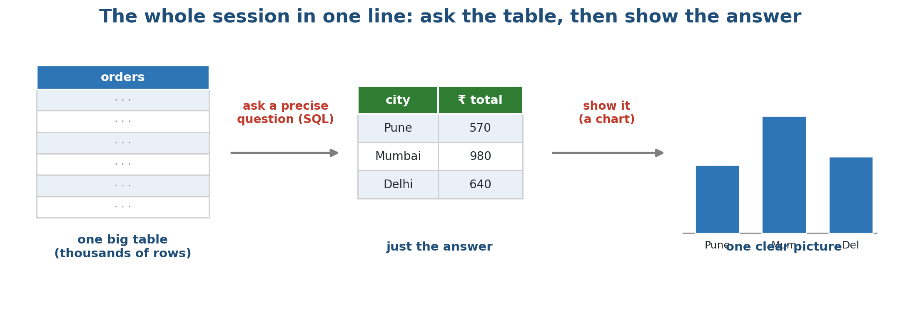
Every seaborn chart is the same sentence. Change the verb, keep the rest.
You hand seaborn a table, say which column runs across and which runs up, and it draws. Learn that once and ten charts come free.
What we'll cover
- 1 The one signature — data, x, y, hue
- 2 The five charts to memorize
- 3 Five more, once those are automatic
- 4 Which chart answers which question
- 5 Making a chart presentable
- 6 Honest charts vs misleading ones
- 7 Lab: a one-page dashboard (closes Module 0)
- 8 Optional coda: where the table came from (SQL)
New here? You are in the right room
- Never drawn a chart in code? Today is a good day to start — every chart below is one line.
- You need nothing from earlier sessions except how to run a notebook cell.
- New to Python? primers/python_in_15_minutes.md
- Want the picture behind charts? primers/choosing_a_chart.md
- Any unfamiliar word? primers/glossary.md
- Already write matplotlib or pandas? Look for the cells marked Stretch (optional) — same chart, the professional way.
1 · The one signature
- Seven arguments, and then everything is the same
The arguments nearly every seaborn function takes
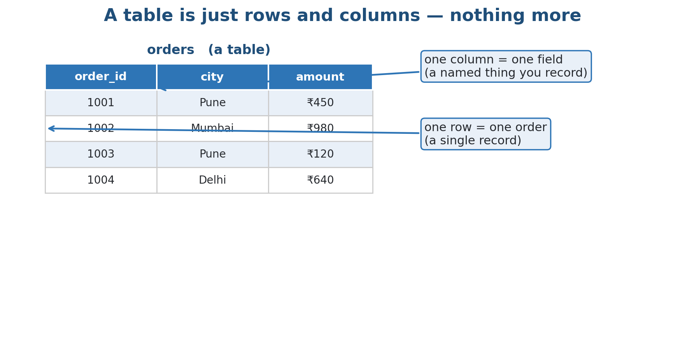
Learn these seven once. Every chart today is a rearrangement of them.
hue: a third column, for free
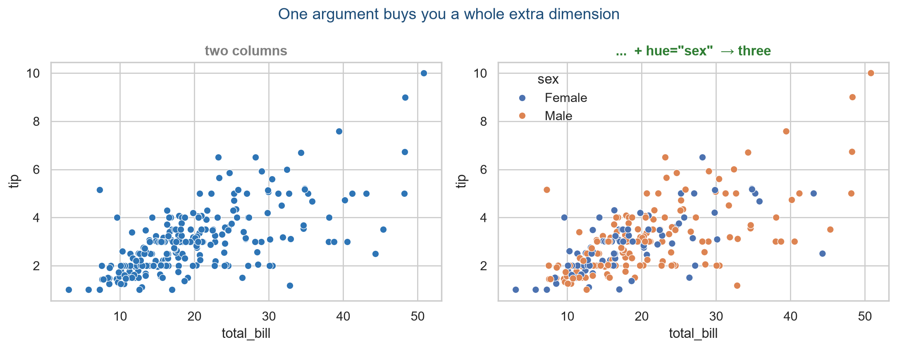
The same call, the same data. One extra argument, one extra dimension.
The three lines you always start with
- pandas holds the table, seaborn draws it, matplotlib is the canvas underneath.
CODE OUTPUT ▸ import pandas as pd import seaborn as sns import matplotlib.pyplot as plt sns.set_theme(style="whitegrid") # one line, every chart matches tips = pd.read_csv("data/tips.csv") tips.head() total_bill tip sex smoker day time size 0 16.99 1.01 Female No Sun Dinner 2 1 10.34 1.66 Male No Sun Dinner 3 2 21.01 3.50 Male No Sun Dinner 3
2 · The five charts to memorize
- These answer most questions you will ever be asked
Five functions, and you are most of the way there
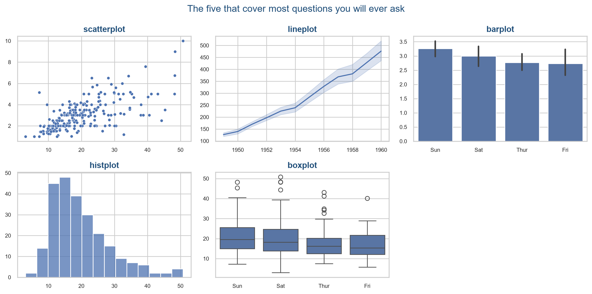
scatter · line · bar · histogram · box — drawn from the datasets you get today.
scatterplot — do two numbers move together?
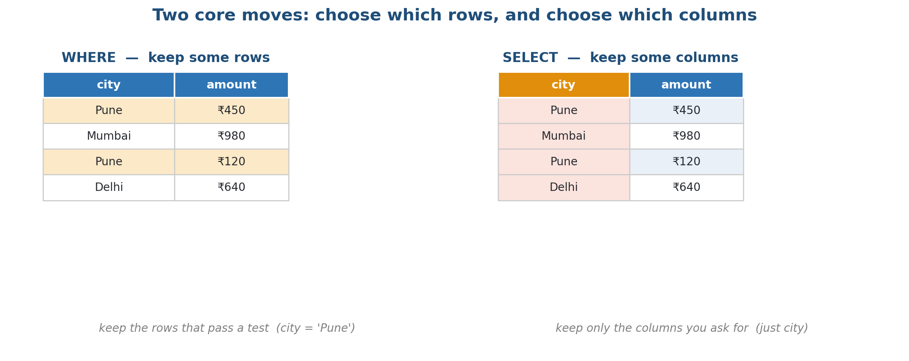
One dot per row. The cloud drifting up-right is the answer.
lineplot — what happened over time?
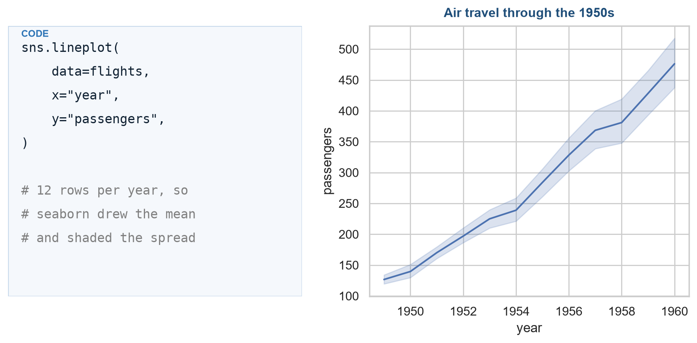
The joining line claims these points follow one another. Only use it when they do.
barplot — how do categories compare?
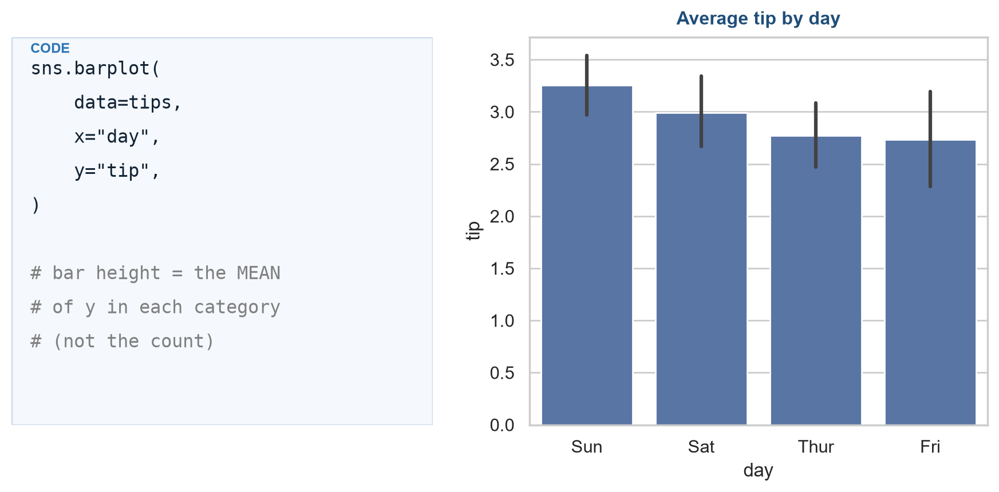
Bar height is the MEAN of y in each category, with the thin line showing uncertainty.
histplot — what shape is one column?
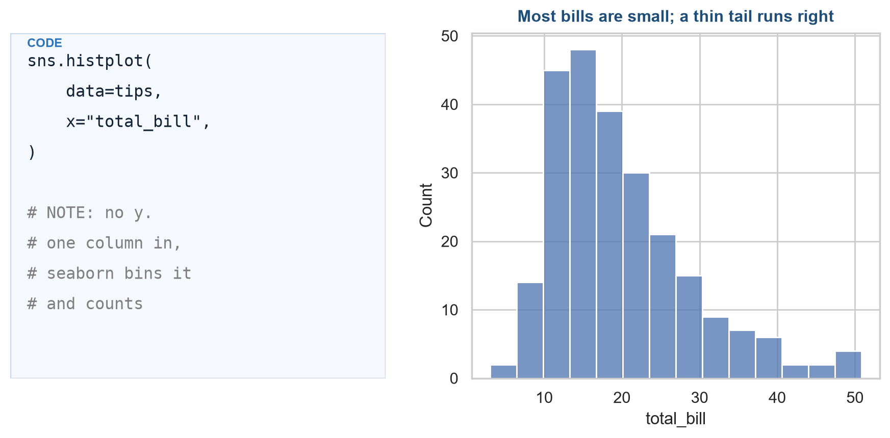
No y at all: you give it one column and seaborn bins it and counts.
boxplot — compare shapes, and spot the odd ones
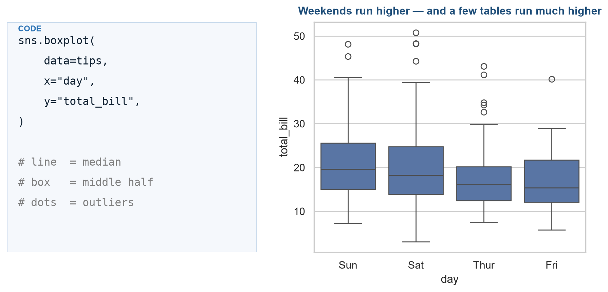
Line = median, box = middle half, whiskers = most of the rest, dots = outliers.
The five, and the question each one answers
3 · Five more, once those are automatic
The second five
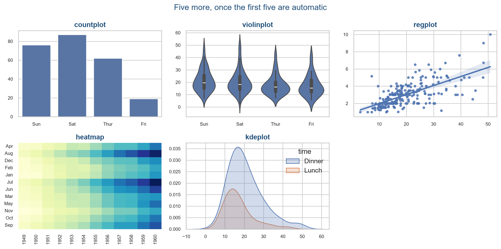
count · violin · regression · heatmap · density — the ones you reach for next.
countplot vs barplot — the mix-up that costs marks
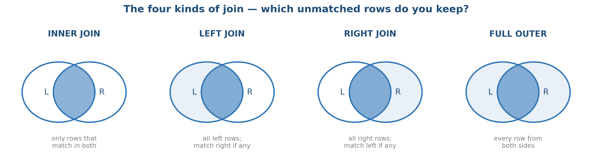
Same shape, same data, completely different question.
heatmap — a grid of numbers, read as colour
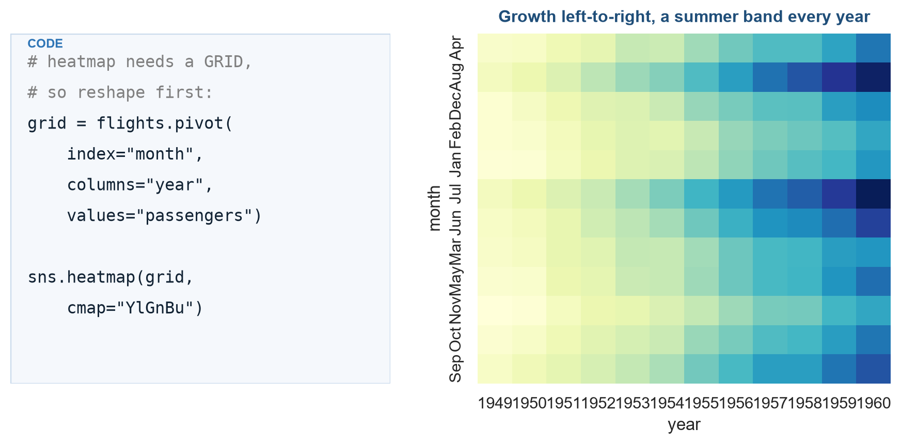
Reshape to a grid first with pivot, then let colour do the reading.
pairplot — when you do not yet know what to ask
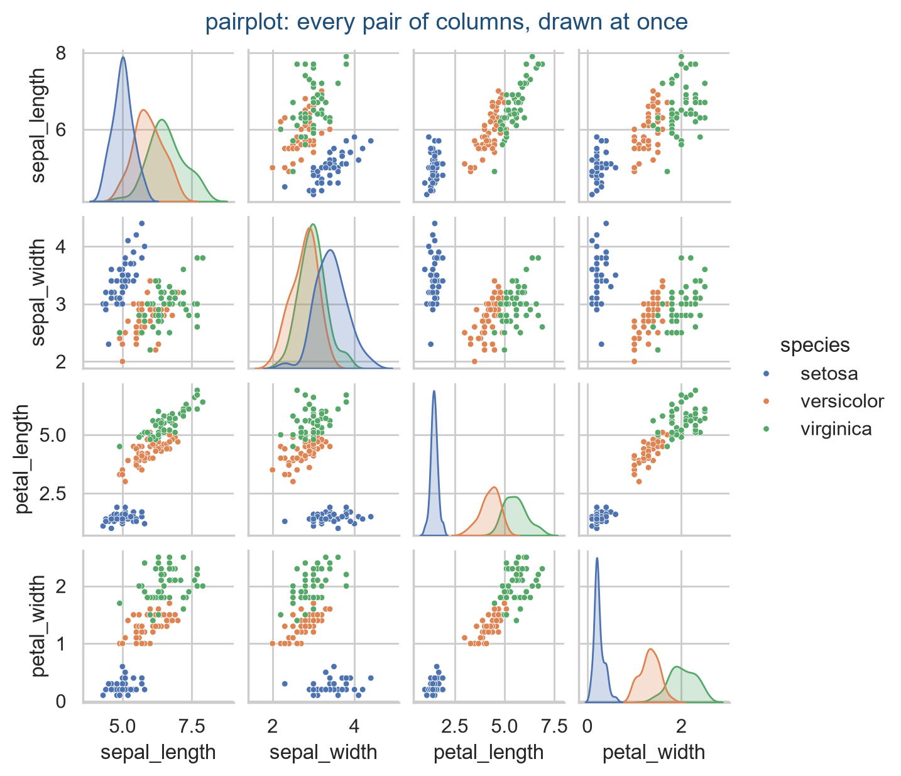
Every pair of numeric columns at once, with each column's own shape down the diagonal.
4 · Which chart answers which question
- The judgement half — this is where the marks are
Start from the question, never from the chart
- The beginner move is 'I want a pie chart'. The professional move is 'what am I trying to show?'
- Comparing categories → bar
- A trend through time → line
- The shape of one column → histogram or box
- The relationship between two → scatter
- Parts of a whole → stacked bar (a pie only for two or three slices)
- Get the question right and the chart almost chooses itself.
Question → chart, with an Indian-industry example
Two charts, same data, different question
- countplot(x='day')
- How MANY bills arrived each day
- Height = a count of rows
- Answers: when is the restaurant busy?
- No y argument
- barplot(x='day', y='tip')
- The AVERAGE tip on each day
- Height = a mean of y
- Answers: when do people tip well?
- y is required
5 · Making a chart presentable
Four adjustments turn a working chart into a shareable one
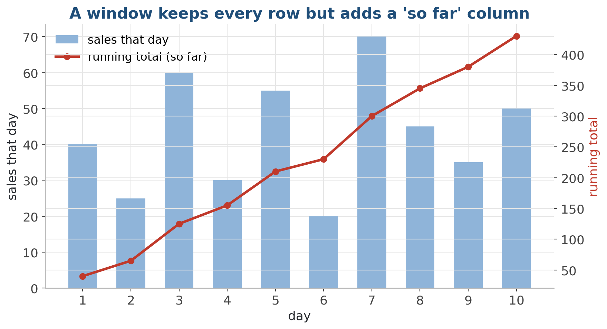
sns.set_theme(style=...) — whitegrid, darkgrid, white, ticks.
Size, colours, and a title that says something
- The title says what the chart MEANS. "petal length vs width" is what the axes already say.
CODE plt.figure(figsize=(8, 5)) # inches — BEFORE the chart ax = sns.scatterplot(data=iris, x="petal_length", y="petal_width", hue="species", palette="Set2", s=70) ax.set_title("Petal shape separates the three species") ax.set_xlabel("Petal length (cm)") ax.set_ylabel("Petal width (cm)")
A dashboard is several charts sharing a page
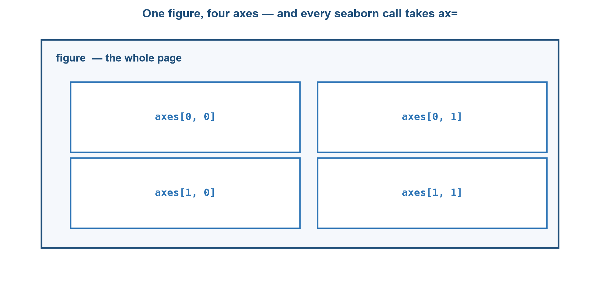
plt.subplots makes the grid; every seaborn call takes ax= to say which panel.
The dashboard you will build
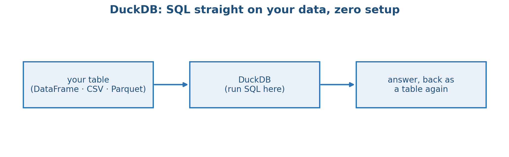
Four questions, four panels, one page — the Module-0 deliverable.
6 · Honest charts vs misleading ones
Same numbers, two very different stories
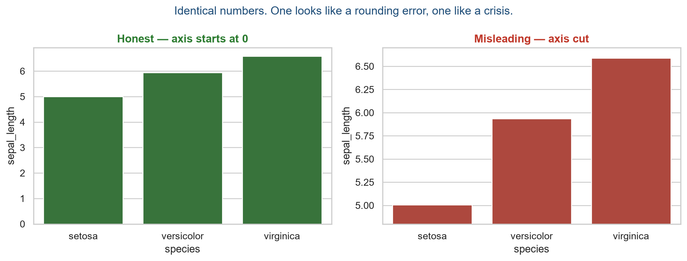
Bars start at zero, or the eye is being lied to.
Clutter vs clarity
- Makes it harder to read
- Every category a different colour
- 3-D bars and drop shadows
- A legend for something already labelled
- Six questions on one chart
- Column names left as axis labels
- Makes the point land
- One colour, unless colour means something
- Flat, plain shapes
- Label the thing directly
- One chart, one point
- Real words, with units
A chart is an argument. Make it honest, make it clear, and make one point.
7 · Lab, pitfalls & wrap-up
Module-0 deliverable: a one-page dashboard
- In the lab: Explore a dataset, choose four charts that answer four questions, and lay them out on a single readable page.
- 1. Pick tips, flights, iris, or any CSV of your own
- 2. Write your four questions in plain English FIRST, before drawing
- 3. Choose the chart that answers each one
- 4. Lay them out with plt.subplots and ax=, then fig.tight_layout()
- 5. Give every panel a real title and real axis labels
- 6. Write the one honest sentence each panel is telling you
- Deliverable: 03_one_page_dashboard.ipynb — four panels, real titles, and one honest sentence under each.
Common first-timer traps
- What goes wrong
- y= passed to histplot or countplot
- figsize set after the seaborn call
- heatmap given a long table, not a grid
- Panels overlapping in a dashboard
- hue used when nothing needs splitting
- Chart drawn before the question is decided
- The fix
- Those take one column; the height IS the count
- plt.figure(figsize=...) goes FIRST
- Reshape with .pivot() before drawing
- End with fig.tight_layout()
- Drop it — colour should mean something
- Write the question down first, in English
Key takeaways
- Every seaborn chart is one sentence: data, x, y, hue.
- Five functions — scatter, line, bar, histogram, box — cover most questions.
- countplot counts rows; barplot averages a column. Different questions.
- pairplot first, when you do not yet know what to ask.
- Start from the question. The chart almost chooses itself.
- Bars start at zero. A cut axis is a lie the eye cannot resist.
- A chart is an argument: honest, clear, one point.
Optional — what a chart is, mathematically
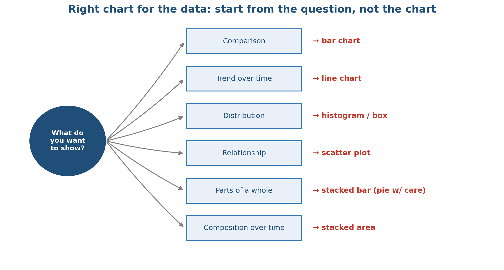
Four dimensions of iris, two directions on the page. You choose which two.
Optional coda · Where the table came from
In industry, the table usually lives in a database
- Today you read a CSV. At work, data more often sits in a database, and SQL is the small language for asking it a precise question.
- SELECT which columns · WHERE which rows · GROUP BY how to bundle them up
- DuckDB runs SQL straight on a pandas DataFrame — nothing to install, no server, no setup.
- It hands you back a DataFrame, which you chart exactly as you did all session.
- None of today's notebooks or the deliverable depend on this. It is a pointer, not an examinable topic.
SQL, then a chart — the industry rhythm
- SQL narrows the table to the answer; seaborn shows it. The second line is the session you just had.
CODE import duckdb # ask the table a precise question answer = duckdb.sql(""" SELECT day, AVG(tip) AS avg_tip FROM tips GROUP BY day """).df() # then show it, exactly as before sns.barplot(data=answer, x="day", y="avg_tip")
Code & further reading
- Code: github.com/bp-course/applied-maths-in-industry › sessions/S05_visualization//
- Notebooks for this session
- Data
- Reading
01_your_first_five_charts.ipynb — the five to memorize 02_five_more_charts.ipynb — counts, violins, trend lines, heatmaps 03_one_page_dashboard.ipynb — the Module-0 deliverable data/tips.csv — 244 restaurant bills data/flights.csv — monthly air passengers, 1949-1960 data/iris.csv — 150 flowers, measured four ways seaborn tutorial — seaborn.pydata.org/tutorial seaborn gallery — seaborn.pydata.org/examples Claus Wilke — Fundamentals of Data Visualization (free online)
Next session
- S6 — Mathematical Modeling: turning a messy real problem into something you can actually compute with.
SQL and Visualization
Ask a Table a Question
- SQL and charts: query the data, then show the answer clearly
APPLICATIONS OF MATHEMATICS IN INDUSTRY Module 0 — Industry Toolkit & Math-to-Code Bridge · Session S5 · 2 hours The session that closes Module 0 — your toolkit is complete
The problem: a table full of questions you can't scroll to
- Picture a small online store. You sell pens, notebooks and markers, and you ship to Pune, Mumbai and Delhi.
- Every sale lands in one big table: one row per order, with the city, the product and the amount in rupees.
- After a few months that table has thousands of rows — and you have real questions. Which city buys the most? Are sales growing?
- You cannot answer those by scrolling. You need a clean way to ask the table, and a clear way to show the answer.
The one idea, in a single picture
- Your data is one big table.
- SQL asks it a precise question and hands back just the answer, as a smaller table.
- A chart turns that answer into one clear picture.
- Two halves, one flow: query it, then show it.
Ask the table a precise question, get a small answer back, then show it with the right chart.
Ask the table a precise question with SQL. Then show the answer with the right chart. That is the whole of today.
What we'll cover
- 1 The problem, and the one idea (done — that was the big picture)
- 2 Meet your data: a table, and the words that ask it questions
- 3 Joins: putting two tables back together
- 4 Summarising: group rows, and add a running total
- 5 DuckDB: run SQL right on your data, no setup
- 6 Charts: the right one for the question, kept honest
- 7 Lab: a one-page dashboard — the Module-0 deliverable
1 · Meet your data: a table
- Part A — asking the table questions
Why it is worth learning SQL
- Most company data does not live in a spreadsheet. It lives in a database: many tables that link to each other.
- Orders, customers, payments, inventory — separate tables, connected.
- SQL is the one language used to ask questions of that data, everywhere: banks, Flipkart, Razorpay, hospitals, government.
- If you can write SQL, you can get the data yourself, instead of waiting for someone to export a file for you.
A table: rows and columns, nothing more
One row is one record (an order); one column is one field (city, amount). That is the whole picture.
Build the orders table in code
- A dictionary of lists becomes the table: each key is a column, each list its values.
CODE import pandas as pd # tables in Python (DataFrames) orders = pd.DataFrame({ "order_id": [1,2,3,4,5,6,7,8], "city": ["Pune","Mumbai","Pune","Delhi","Mumbai","Pune","Delhi","Mumbai"], "product": ["Pen","Notebook","Notebook","Pen","Pen","Marker","Notebook","Marker"], "amount": [120, 450, 380, 90, 110, 200, 470, 160]}) orders OUTPUT ▸ order_id city product amount 0 1 Pune Pen 120 1 2 Mumbai Notebook 450 2 3 Pune Notebook 380 3 4 Delhi Pen 90 4 5 Mumbai Pen 110 5 6 Pune Marker 200 6 7 Delhi Notebook 470 7 8 Mumbai Marker 160
Your data is just a table. SQL is a small language for asking that table precise questions — and it reads almost like English.
2 · The five words that do most of the work
Five words cover most real questions
- SELECT — which columns you want.
- FROM — which table you are reading.
- WHERE — keep only the rows that pass a test.
- GROUP BY — bundle rows together to summarise them.
- ORDER BY — arrange the output.
- Master these five and you can answer a huge share of business questions.
Two core moves: keep some rows, keep some columns
WHERE keeps rows (the ones that pass a test); SELECT keeps columns (the ones you ask for).
Keep just the Pune orders (WHERE + SELECT)
- WHERE keeps only the rows that pass the test; SELECT keeps only the three named columns.
CODE OUTPUT ▸ import duckdb # run SQL straight on the DataFrame query = """ SELECT city, product, amount FROM orders WHERE city = 'Pune' """ duckdb.sql(query).df() city product amount 0 Pune Pen 120 1 Pune Notebook 380 2 Pune Marker 200
How to read a query (the order it actually runs)
- You WRITE it as: SELECT … FROM … WHERE … GROUP BY … ORDER BY.
- The database RUNS it roughly as: FROM → WHERE → GROUP BY → SELECT → ORDER BY.
- So it filters rows first, then groups them, then picks the columns, then sorts.
- Knowing this order explains most 'why doesn't my query work?' moments.
The one query shape you'll reuse forever
- Almost every question you ask fits this skeleton — fill in the clauses you need, drop the ones you don't.
SQL SELECT city, SUM(amount) AS total -- columns + summaries FROM orders -- the table WHERE amount > 0 -- keep some rows (before grouping) GROUP BY city -- one row per group HAVING SUM(amount) > 1000 -- keep some groups (after grouping) ORDER BY total DESC -- sort the result LIMIT 10; -- just the top few HOW IT RUNS ▸ # runs in this order: # FROM -> WHERE -> GROUP BY -> HAVING -> SELECT -> ORDER BY -> LIMIT
3 · Joins — putting two tables together
Why the data is split across tables
- We don't repeat a customer's full name on every one of their orders.
- Instead: a customers table and an orders table, linked by a shared column (a key, like cust_id).
- Store each fact once, in one place. Fix a phone number once, not on every order.
- A join puts the two tables back together when you need them combined — exactly the pandas merge from S3, in database words.
A join stitches two tables on a shared column
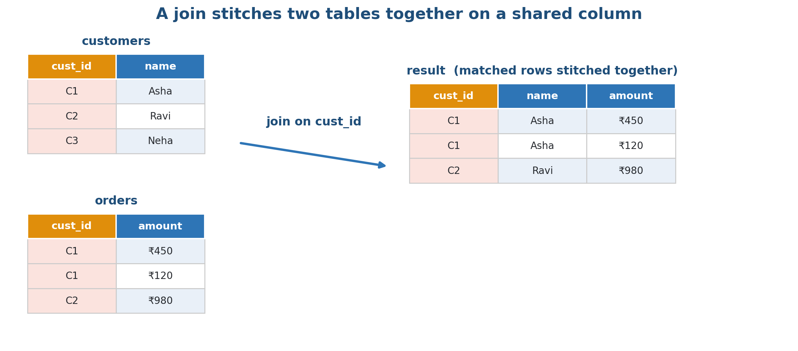
Match rows where cust_id agrees, then carry both tables' columns into the result.
Stitch each order to its customer (INNER JOIN)
- ON matches rows where customer_id agrees, then carries columns from both tables into one.
CODE query = """ SELECT orders.order_id, customers.name, customers.city, orders.amount FROM orders INNER JOIN customers ON orders.customer_id = customers.customer_id """ duckdb.sql(query).df() OUTPUT ▸ order_id name city amount 0 102 Asha Pune 120 1 103 Ravi Mumbai 980 2 104 Neha Pune 640 3 101 Asha Pune 450
The four kinds of join
- Inner: only the matches.
- Left: keep all left rows.
- Right: keep all right rows.
- Full outer: keep everything.
They differ only in which unmatched rows you keep.
Inner vs left join — a costly difference
- INNER JOIN
- Customers WITH at least one order
- Customers who never ordered disappear
- Your count can silently shrink
- Use when you only want matched records
- LEFT JOIN
- ALL customers, orders attached if any
- Never-ordered customers kept (blank orders)
- Count of customers preserved
- Use when the left table is your 'spine'
4 · Summarising: group rows, add a running total
GROUP BY: split, summarise, combine
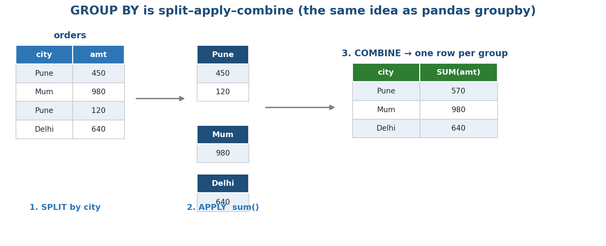
Split the rows into groups, apply a summary to each, combine into one row per group.
Total sales per city with GROUP BY
- Eight order rows collapse to one summary row per city; SUM adds the amounts in each group.
CODE OUTPUT ▸ query = """ SELECT city, SUM(amount) AS total_amount FROM orders GROUP BY city ORDER BY total_amount DESC """ duckdb.sql(query).df() city total_amount 0 Mumbai 720.0 1 Pune 700.0 2 Delhi 560.0
The grouping rule that trips everyone up
- With GROUP BY, every column you SELECT must either be in the GROUP BY or wrapped in a summary.
- Why: each output row stands for a whole group, so a plain column has many values and no single answer.
- SUM, COUNT, AVG, MIN and MAX collapse those many values into one.
- Forgetting this is the number-one GROUP BY error — the database will complain.
WHERE vs HAVING — filter before, or after, grouping
- WHERE
- Filters individual rows
- Runs BEFORE grouping
- Cannot use a total like SUM
- e.g. WHERE city = 'Pune'
- HAVING
- Filters whole groups
- Runs AFTER grouping
- CAN use totals like SUM
- e.g. HAVING SUM(amount) > 10000
Two shapes of summary: collapse the rows, or keep them
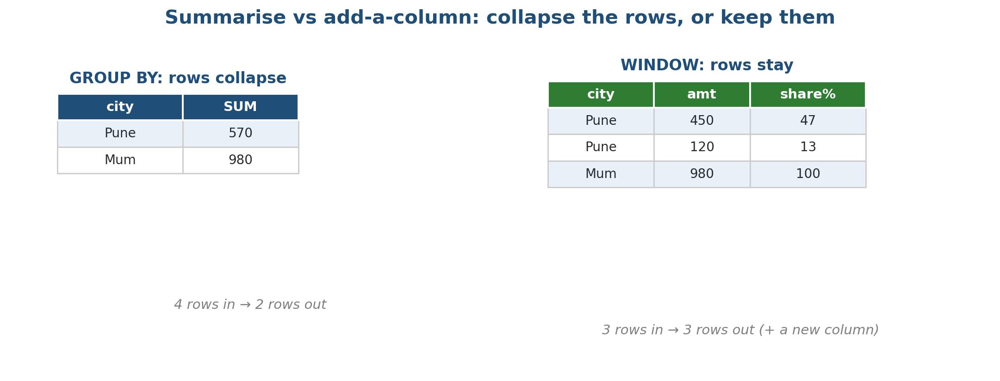
GROUP BY collapses each group to one row; a window keeps every row and adds a column.
A window in action: a running total
- Running totals.
- Rank within a group.
- Change from the previous row.
- Moving averages.
Every day's bar is still there; the line is the cumulative total 'so far'.
Add a running total with a window function
- SUM ... OVER keeps every month and adds a column: revenue accumulated so far.
CODE query = """ SELECT month, revenue, SUM(revenue) OVER (ORDER BY month_number) AS revenue_so_far FROM monthly ORDER BY month_number """ duckdb.sql(query).df() OUTPUT ▸ month revenue revenue_so_far 0 Jan 120 120.0 1 Feb 150 270.0 2 Mar 90 360.0 3 Apr 200 560.0 4 May 170 730.0
5 · DuckDB — run SQL right on your data
DuckDB: SQL straight on your data, no setup
Point it at a DataFrame, a CSV or a Parquet file, and just write SQL.
Why DuckDB fits this course
- What it gives you
- pandas or SQL?
- Zero setup — no database server
- pip install duckdb and you are running
- Query a DataFrame as if it were a table
- SELECT * FROM my_table WHERE …
- Reads CSV and Parquet directly
- great for files too big for Excel
- Fast — built for exactly this kind of query
- When to reach for which
- pandas: reshaping, cleaning, plotting
- SQL/DuckDB: filter, join, group, total
- They mix freely in one notebook
- use whichever says the question more clearly
- No wrong choice
- convert between them whenever you like
Your table is already something you can query. DuckDB means there is no database to install — and no excuse not to know SQL.
Same question, two ways: SQL ↔ pandas
6 · Showing the answer: charts
- Part B — communicating it
A page has only two directions
- Your answer can still have several columns: city, month, revenue, count.
- But a page or a screen has only two directions. A chart chooses which columns to lay on those directions.
- Pick the slice well and the pattern jumps out. Pick it badly and you hide it, or worse, mislead.
- Stretch (optional): this act of squeezing many columns onto two axes has a formal name — projection — waiting on the optional slide at the end.
Choosing what to show is choosing the picture
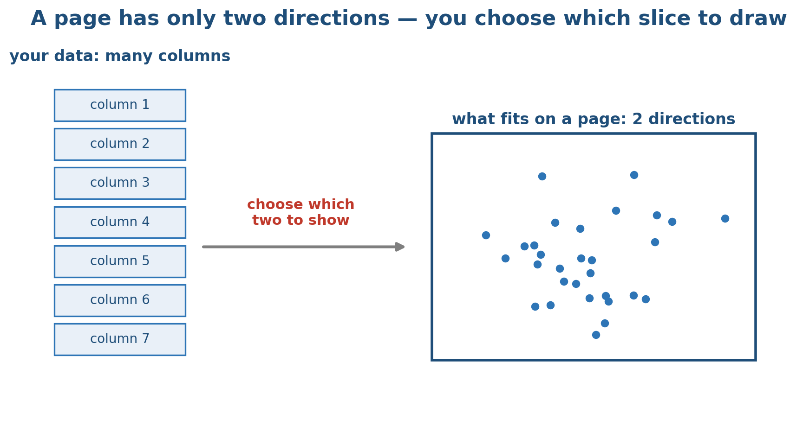
Many columns on the left; a chart shows the two you chose.
Three libraries, one mental model
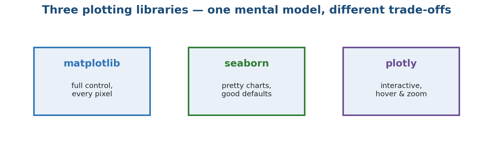
matplotlib for control, seaborn for quick good-looking defaults, plotly for interactivity.
7 · The right chart for the question
Start from the question, then pick the chart
Begin with what you are trying to show, and the chart almost chooses itself.
Question → chart, with an Indian-industry example
Query the answer first, then chart it
- ORDER BY ... LIMIT 3 pulls the three best months — the small answer a chart then shows.
CODE OUTPUT ▸ # the dashboard's `sales` table has one row per month query = """ SELECT month, revenue FROM sales ORDER BY revenue DESC LIMIT 3 """ duckdb.sql(query).df() month revenue 0 Dec 213.0 1 Nov 190.0 2 Oct 185.0
8 · Honest charts vs misleading ones
Same numbers, two very different stories
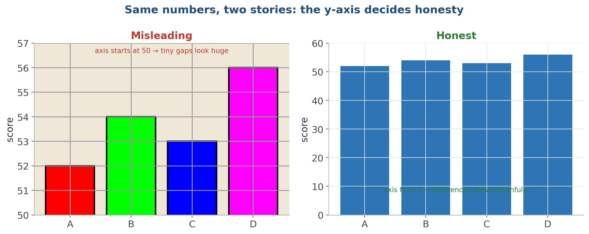
The truncated y-axis on the left makes tiny differences look dramatic.
Clutter vs clarity
- Avoid
- Truncated axes that exaggerate
- 3D pie charts (angles fool the eye)
- Rainbow / too many colours
- Heavy gridlines, drop shadows, clip-art
- Decoration that says nothing
- Do instead
- Bar axes start at zero
- A flat bar chart over any pie
- One or two colours, used on purpose
- Light grid, lots of whitespace
- Every mark carries information
A chart is an argument. Make it honest, make it clear, and make one point.
9 · Lab, pitfalls & wrap-up
Module-0 deliverable: a one-page dashboard notebook
- In the lab: take a small sales dataset, ask it questions with SQL via DuckDB, then show the findings as clean charts — all in one notebook on GitHub.
- 1. Notebook 01: build a small orders table and ask it questions with SQL (SELECT, WHERE, GROUP BY, ORDER BY).
- 2. Notebook 02: split into customers and orders, join them back, and sanity-check the row counts.
- 3. Add a monthly trend with a window running total.
- 4. Notebook 03: draw four clean charts — a bar, a line and more — and assemble a one-page dashboard.
- 5. Write one honest takeaway sentence under each chart.
- Deliverable: a one-page dashboard notebook on GitHub: SQL query → clean charts, one honest sentence each.
Common first-timer traps — SQL and charts
- Avoid
- SELECT * everywhere (slow, unclear)
- Forgetting to group every selected column
- An inner join that silently drops rows
- Truncated / non-zero bar axes
- Rainbow colours for ordered data
- Do instead
- Select only the columns you need
- Group or summarise every selected column
- Left join when you need the full spine
- Start bar axes at zero
- One clean colour scale
Key takeaways
- Your data is a table; SQL is a small, English-like language for asking it precise questions.
- SELECT keeps columns, WHERE keeps rows; GROUP BY summarises, JOIN combines two tables.
- Inner vs left join, and WHERE vs HAVING, decide which rows survive.
- DuckDB runs SQL straight on a DataFrame, CSV or Parquet with zero setup.
- A page has only two directions: pick the chart from the question, and keep it honest.
- Start bar axes at zero, use one or two colours, and make each chart say one thing.
Code & further reading
- Code: github.com/bp-course/applied-maths-in-industry › S05_sql_visualization/
- Notebooks for this session
- Data
- Reading
01_ask_questions_of_a_table.ipynb 02_combine_two_tables.ipynb 03_one_page_dashboard.ipynb Small sales/retail tables generated inside the notebooks (no download) New to code? primers/python_in_15_minutes.md Want the picture behind charts? primers/choosing_a_chart.md SQLBolt — free interactive SQL lessons (sqlbolt.com) DuckDB documentation (duckdb.org/docs) Claus O. Wilke — Fundamentals of Data Visualization (free online) seaborn tutorial (seaborn.pydata.org/tutorial)
Next session
- S6 — Mathematical Modeling: turning a messy real problem into something you can compute (Module 1 begins). The toolkit is built; now we learn what to build.